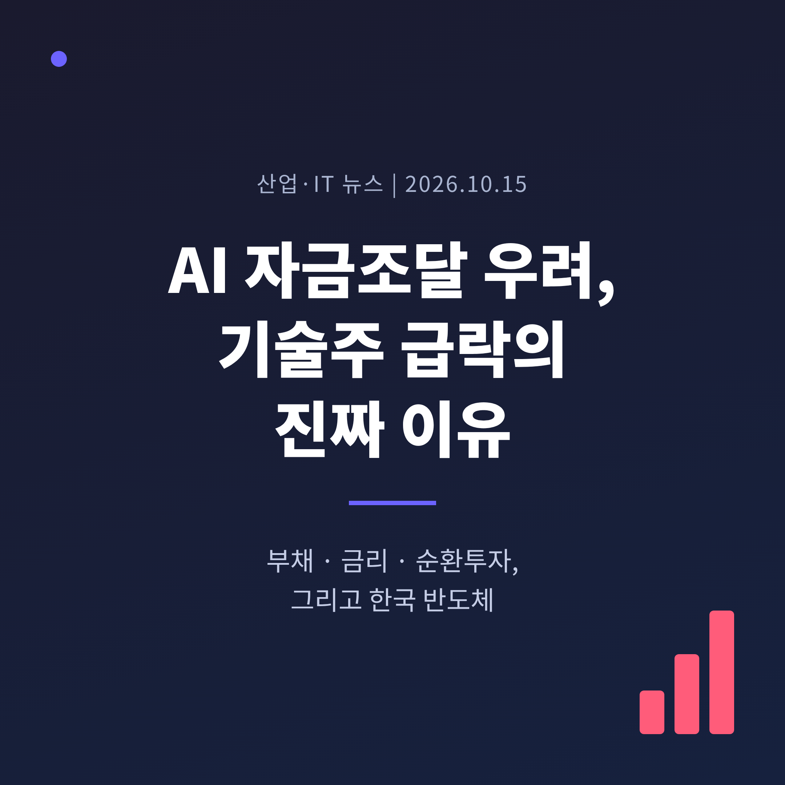
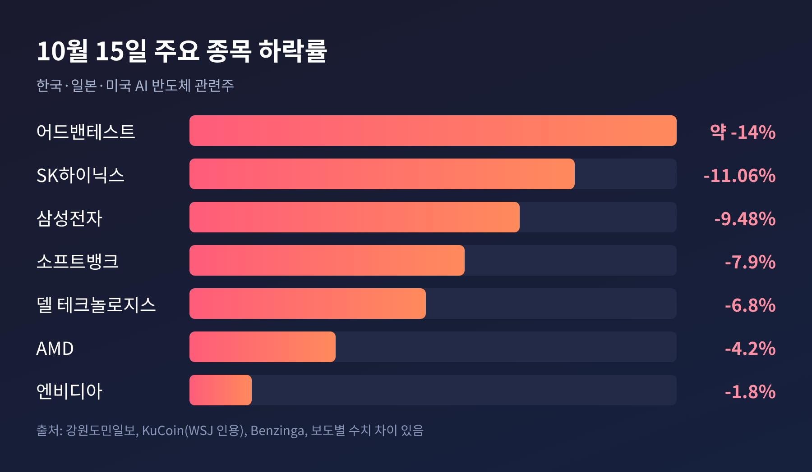
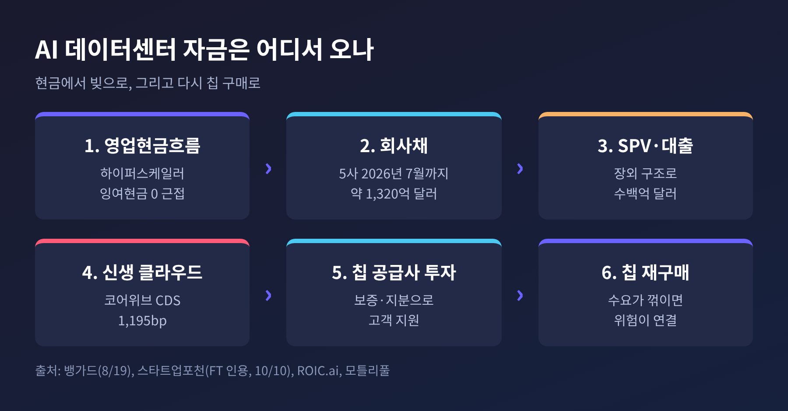
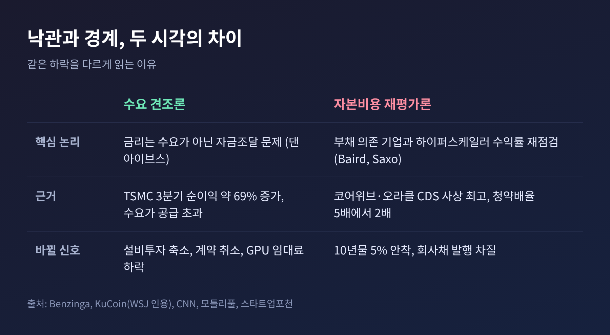
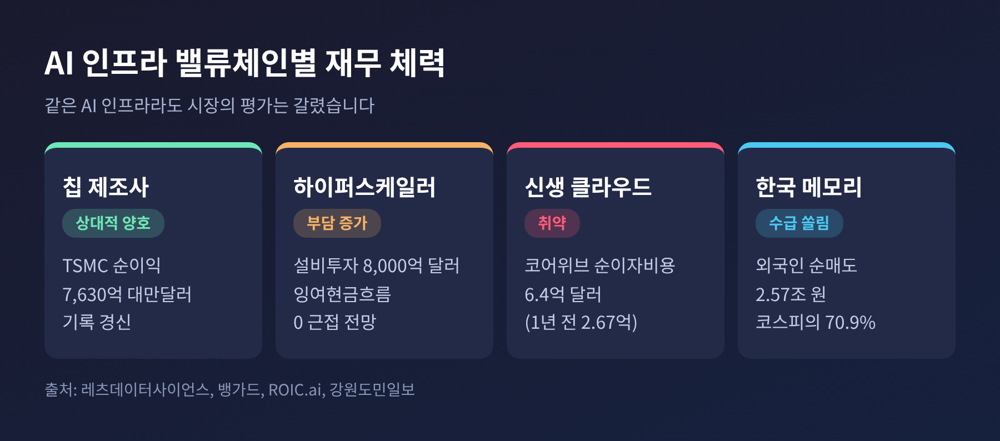

이번 글에서는 2026년 10월 15일 글로벌 기술주를 덮친 'AI 자금조달 우려'를 정리해 보겠습니다. 핵심은 AI 수요가 꺾였느냐가 아니라, 그 수요를 받치는 돈이 어디서 오고 얼마나 비싸졌느냐입니다. 부채 구조와 금리, 한국 반도체 공급망에 주는 의미까지 차례로 살펴봅니다.
3줄 요약 - 10월 15일 코스피가 7~8% 급락하고 삼성전자·SK하이닉스가 9~11% 떨어졌습니다. 미국에서는 엔비디아·AMD·델이 내렸습니다. - 방아쇠는 미국 물가 지표 상회와 5%대 국채금리, 그리고 AI 인프라 기업의 부채 부담에 대한 불안이었습니다. - 시장은 'AI 수요'보다 'AI 자본비용'을 다시 계산하기 시작했습니다.
■ 10월 15일, 무슨 일이 있었나
10월 14일(수) 미국 9월 소비자물가가 예상보다 높게 나왔습니다. 도매물가도 2022년 이후 가장 빠른 속도로 올랐다는 보도가 이어졌습니다. 나스닥은 1.88%, S&P 500은 1.11% 내렸습니다.
충격은 하루 뒤 아시아에서 커졌습니다. CNN은 코스피가 7.6%, 로이터는 8% 넘게 하락했다고 전했고, 서킷브레이커가 발동했습니다. 삼성전자는 9.48% 내린 21만 원, SK하이닉스는 11.06% 내린 126만 2천 원에 마감했습니다. 강원도민일보에 따르면 이날 외국인은 두 종목만 2조 5,685억 원을 순매도했습니다. 코스피 전체 외국인 순매도(3조 6,212억 원)의 70.9%입니다.
일본과 유럽도 흔들렸습니다. 소프트뱅크는 8~9%대, 어드밴테스트는 14% 가까이 빠졌습니다. 낙폭 수치는 매체마다 조금씩 다릅니다. 이 글에서는 범위로 적었습니다.
미국장은 달랐습니다. 엔비디아는 약 1.8%, AMD는 약 4%, 델은 6.8% 하락했지만 S&P 500과 나스닥은 소폭 오른 채 마감했습니다. 국채로 자금이 몰리며 금리가 내려 낙폭이 줄었기 때문입니다. 다만 필라델피아 반도체지수는 7거래일 연속 하락하며 6월 고점 대비 약 20% 내려앉았습니다. 세계 AI·반도체 시가총액 상위 20개 종목에서는 1조 달러 이상이 사라졌습니다(CNBC 인용 보도).

■ 왜 '자금조달'이 쟁점이 되었나
AI 데이터센터는 짓는 데 먼저 돈이 들고, 수익은 한참 뒤에 옵니다. 그 돈을 현금으로 충당하던 시기는 지나가고 있습니다.
뱅가드에 따르면 알파벳·아마존·메타·마이크로소프트·오라클의 채권 발행은 2020~2024년 연평균 약 350억 달러였습니다. 2025년에는 930억 달러, 2026년 7월 말까지는 약 1,320억 달러로 늘었습니다. 올해 이들의 설비투자는 8,000억 달러에 가깝고, 2027년부터는 연 1조 달러를 넘을 것으로 전망됩니다.
모건스탠리는 AI 관련 글로벌 부채 발행이 올해 말 약 5,700억 달러에 이를 것으로 추정합니다. 같은 보도는 아마존·마이크로소프트·메타·알파벳의 잉여현금흐름이 올해 0에 가깝거나 마이너스가 될 수 있다고 전했습니다. 집계 기준이 달라 수치는 출처마다 다릅니다만, 방향은 같습니다. 빚으로 짓는 비중이 빠르게 커지고 있습니다.
문제는 채권 시장의 표정이 바뀌었다는 점입니다. 하이퍼스케일러 채권의 청약배율은 2월 약 5배에서 7월 약 2배로 낮아졌습니다. 메타의 250억 달러 채권에는 960억 달러 주문이 몰렸는데, 1년 전 300억 달러 채권에는 1,250억 달러가 몰렸습니다.

■ 부채, 채권, 그리고 순환투자 논란
가장 먼저 압박을 받은 곳은 빚이 많은 신생 업체였습니다. 엔비디아가 투자한 코어위브는 10월 14일 주가가 15.46% 떨어졌습니다. 2분기 순이자비용이 6억 4천만 달러로 1년 전(2억 6,700만 달러)의 두 배를 넘었고, 같은 분기 설비 현금 지출은 64억 달러에 달했습니다. 부도보험료에 해당하는 5년 CDS는 약 1,195bp까지 올라 사상 최고를 기록했고, 일부 채권은 액면의 80% 안팎에서 거래됐습니다(모틀리풀, ROIC.ai).
오라클도 마찬가지입니다. S&P는 오라클을 투기등급 바로 위인 BBB-로 내렸고, 5년 CDS는 300bp에 근접했습니다. 소프트뱅크의 CDS도 하루에 24bp 올라 424bp가 됐습니다.
여기에 '순환투자' 논란이 겹칩니다. 칩 공급사가 고객에게 투자하거나 보증을 서고, 그 고객이 다시 그 칩을 사는 구조입니다. 7월 MarketBeat 기고는 엔비디아가 오픈AI의 데이터센터 임대에 2,500억 달러 규모의 신용보강을 협상 중이라고 전했습니다. 확정된 내용은 아니며, 해석이 섞인 기고라는 점은 감안해야 합니다. 이 글에서 짚고 싶은 것은 구조입니다. 수요가 약해지면 공급사의 위험이 고객의 위험과 한데 묶인다는 점입니다.
엔비디아 젠슨 황은 10월 15일 블룸버그에 코어위브에 별도의 보증은 필요 없고 "자본비용은 사실 하락하고 있다"고 말했습니다. 시장이 곧바로 납득하지는 않았지만, 코어위브는 이날 5.94% 반등했습니다.
■ 금리가 AI 투자 수익률을 바꾼다
미국 10년물 국채금리는 5%를 웃도는 수준입니다. 10월 15일 아시아장 기준 5.106%였고, 10월 28일 FOMC에서 동결될 확률은 선물시장에서 약 75%로 계산됐습니다. 동결이 유력해도 '인하'가 아니라 '고금리 장기화'가 전제라는 점이 중요합니다.
예전에는 AI 투자를 두고 "얼마나 팔릴까"를 물었습니다. 지금은 "빌린 돈의 이자를 감당할 만큼 버는가"를 묻습니다. 삭소 뱅크(Saxo)의 샤루 차나나는 이번 하락을 "자본비용의 재평가"라고 표현했습니다. 같은 맥락에서 브로드컴의 혹 탄 CEO와 인텔의 립부 탄 CEO는 월요일(10월 12일) 자금조달이 칩이나 전력 부족보다 큰 장애물이 될 수 있다고 경고했습니다.
반론도 있습니다. 댄 아이브스는 "금리는 수요 문제가 아니라 자금조달 문제"라며 하락을 매수 기회로 봤고, 설비투자 축소·계약 취소·GPU 임대료 하락이 나타나면 판단을 바꾸겠다고 했습니다. 두 시각 모두 같은 지표를 보고 있습니다. 수요가 아니라 돈의 값이 변수라는 점에서는 일치합니다.

■ 실적과 현금흐름이 말해 주는 것
수요 자체는 아직 견조합니다. TSMC는 10월 15일 3분기 순이익 7,630억 대만달러(전년 대비 약 69% 증가, 기록)를 발표했고, C.C. 웨이 CEO는 AI 수요가 공급 능력을 웃돈다고 밝혔습니다. 그런데도 주가는 2% 내렸습니다. 좋은 실적이 더 이상 방패가 되지 못한다는 신호입니다.
앤트로픽의 3분기 매출은 약 168억~170억 달러로 전해졌습니다. 성장률은 2분기 약 145%에서 약 45~50%로 낮아졌습니다. 시장은 이를 둔화로 읽었지만, D.A. 데이비슨의 질 루리아는 이 회사가 3분기에 현금흐름 흑자를 냈다고 지적했습니다.
정리하면 이렇습니다. 칩을 만드는 쪽의 현금흐름은 좋습니다. 데이터센터를 빌려 쓰는 쪽과 빚으로 짓는 쪽의 현금흐름은 이자 부담에 눌려 있습니다. 같은 'AI 인프라'라도 재무 체력에 따라 시장의 평가가 갈리기 시작했습니다. 가트너는 2030년까지 신생 클라우드 업체의 80% 이상이 문을 닫을 것으로 내다봤습니다.

■ 한국 반도체 공급망에 주는 의미
이번 급락에서 한국은 가장 크게 흔들린 시장 중 하나였습니다. 삼성전자는 10월 2일 이후 24%, SK하이닉스는 10월 6일 이후 31% 떨어졌습니다. 코스피는 6월 한때 연초 대비 116% 올랐다가 32% 수준으로 내려왔습니다(CNN). 지수가 반도체에 얼마나 기대고 있었는지 보여 주는 장면입니다.
원인은 자금조달만이 아닙니다. 중국 CXMT가 더 많은 데이터를 담는 메모리 구조를 발표해 공급과잉과 가격 경쟁 우려가 불거졌습니다. 일본 어드밴테스트, 도쿄일렉트론 등 장비 업체까지 동반 하락한 것도 같은 맥락입니다. 한국 메모리 업체의 실적은 결국 하이퍼스케일러의 설비투자에 달려 있고, 그 설비투자는 이제 채권 시장과 금리의 영향을 받습니다.
한 가지 한계는 짚어야 합니다. 이번 조사에서 삼성전자·SK하이닉스의 고객별 매출 비중이나 HBM 계약 조건은 확인하지 못했습니다. 그래서 실적 영향을 수치로 단정하지는 않겠습니다. 다만 외국인 순매도의 70.9%가 두 종목에 몰렸다는 점, 개인이 2조 원 넘게 사들였다는 점은 수급 구조가 취약해졌음을 보여 줍니다.
■ 앞으로 확인할 신호
앞으로 몇 주 사이에 볼 만한 지표는 네 가지입니다.
과거에도 비슷한 급락이 반등으로 끝난 적이 있습니다. 반대로 자금 비용이 구조적으로 높아진다면 투자 속도는 느려질 수 있습니다. 어느 쪽이 맞을지는 위 지표가 알려 줄 것입니다.
끝으로 한 마디만 더 드리겠습니다. AI 투자를 가르는 것은 기술의 가능성보다 돈의 값이라는 점입니다.
"AI 기계는 여전히 전속력이지만, 연료인 자본이 점점 비싸지고 있다."
Vantage의 헤베 첸이 10월 13일 블룸버그에 한 말입니다. 연료 값이 오를 때 누가 먼저 속도를 줄이는지 지켜보는 일이 이번 국면을 읽는 가장 좋은 방법이라고 생각합니다.
※ 이 글은 공개된 보도를 정리한 정보 제공용이며 특정 종목에 대한 투자 권유가 아닙니다. 투자 판단과 그 결과의 책임은 투자자 본인에게 있습니다.
참고 출처: CNBC(10/15), 로이터·야후파이낸스(10/15), CNN(10/15), 블룸버그(10/13), 벤징가(10/15), 강원도민일보(10/15), 뉴스1(10/15), 모틀리풀(10/16), 스타트업포천(10/10, FT 인용), 뱅가드(8/19), ROIC.ai(10/15)